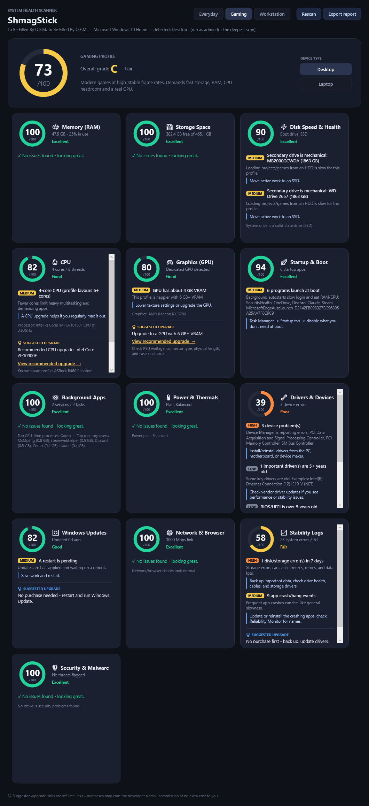

A free, cross-platform tool for Windows, macOS and Linux that scans your PC the way an OBD2 reader scans a car. It scores 13 areas of your computer's health and tells you the single best upgrade to make each one faster. It only reads; it never changes anything.
Each button downloads the latest version for that system. The builds are unsigned, so your operating system may warn you the first time you run one; that is normal for independent software. Intel Macs can run from source.

Total RAM versus how you use the PC, plus live memory and commit pressure.
Free space on your system drive and how much junk is clogging it.
HDD versus SSD on the boot drive, SMART health, and TRIM.
Cores, live load, clock behavior, and a motherboard-compatible upgrade pick.
Dedicated versus integrated, VRAM, and graphics-driver age.
How many programs launch at boot and drag down your login time.
Third-party services and scheduled tasks running in the background.
Power plan, battery state, and heat or throttling when the OS exposes it.
Device errors, old key drivers, and BIOS or firmware age.
Pending restarts and available operating-system update evidence.
Link speed, Wi-Fi signal, browser extensions and cache size.
Recent disk, hardware, blue-screen or kernel-panic, and app-crash events.
Native protection, firewall state, and suspicious startup-item indicators.
The optional Deep Scan goes further: it finds the largest files and folders eating your space, flags programs running from unusual locations, and on Windows it surfaces the threat history your own security software has already recorded. It is a read-only helper, not antivirus; it never opens, quarantines, or deletes anything.
Every category shows its score at a glance. Click any row to expand exactly what is wrong with that part of your computer, or expand and collapse everything at once.
When a section scores below 85 and a part can fix it, such as more RAM, an SSD, or a graphics card, ShmagStick points you to a safe target and a compatibility checklist. Specific CPU purchases are shown only when motherboard compatibility is reasonably established.